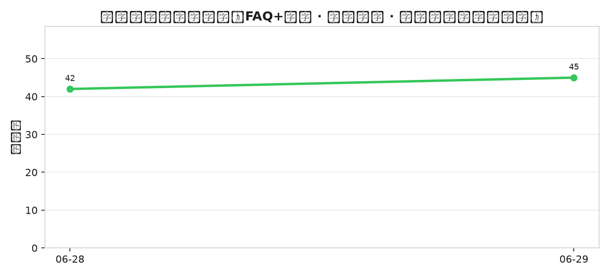
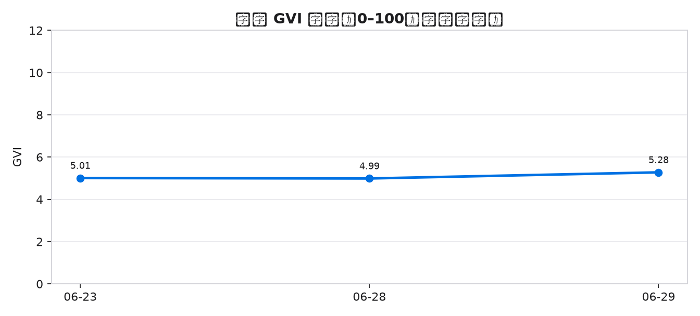
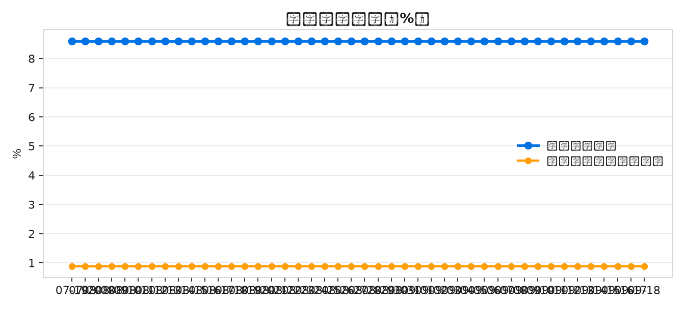
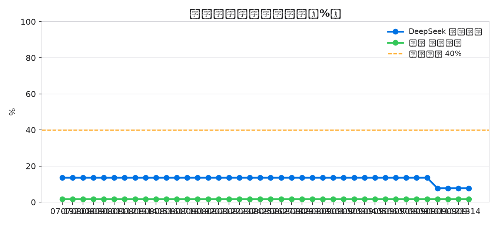

本报告由全自动 AI GEO 系统于每日云端运行后生成，所有指标源自真实测量与单一事实源，可复现、不臆造。
报告日期：2026-06-29 · 决策引擎：ai_gateway:alibaba/qwen3.5-flash · 历史样本：3 天




| 行动 | 层级 | 影响 | 依据 |
|---|---|---|---|
| 扩充 AI 存储技术术语库以覆盖模型训练语料缺口 | 内容层 | high | 机会缺口总数达 176，引用率仅 0.0179，需增加高频技术词（如 KV Cache 优化）以提升大模型检索匹配度。 |
| 修复 Google 索引状态并验证站外信源权威性 | 抓取层 | med | Google 收录页面数为空，且站外渠道多为边缘节点，需确认官方主站索引健康度及权威链接建设。 |
| 步骤 | 结果 | 说明 |
|---|---|---|
| seo_geo_loop/gvi_measure.py --force | OK | 写出：/home/runner/work/zk-geo-autopilot/zk-geo-autopilot/seo_geo_loop/outputs/gvi_compare.json |
| geo_autopilot/geo_brain.py | OK | priorities=3 proposals=2 |
| geo_autopilot/apply_proposals.py | OK | 已应用 1 条提案并通过 verify_site 闸门 |
| seo_geo_loop/build_offsite_site.py | OK | [offsite_site] 生成 6 页 + robots/sitemap/llms -> /home/runner/work/zk-geo-autopilot/zk-geo-autopilot/offsite_site |
| seo_geo_loop/build_offsite_github.py | OK | [offsite_github] 组装完成 -> /home/runner/work/zk-geo-autopilot/zk-geo-autopilot/offsite_github (docs 文件 13 个) |
| geo_plan/source_audit.py | OK | fig.tight_layout() |
| geo_plan/geo_scoring.py | OK | fig.tight_layout() |
| seo_geo_loop/indexnow_submit.py | OK | [OK] 72 URLs; written /home/runner/work/zk-geo-autopilot/zk-geo-autopilot/seo_geo_loop/outputs/indexnow_submit.json |
| seo_geo_loop/live_audit.py | OK | 写出 -> /home/runner/work/zk-geo-autopilot/zk-geo-autopilot/seo_geo_loop/outputs/live_status.json |
| git -C official_website add -A | OK | |
| git -C official_website status --porcelain | OK | M zh/faq.html |
| git -C official_website commit -m | OK | 3 files changed, 9 insertions(+), 3 deletions(-) |
| git -C official_website push origin | OK | 1a5193b..589a232 HEAD -> main |
| push official_website | OK | 已推送触发部署 |
| git -C offsite_github add -A | OK | |
| git -C offsite_github status --porcelain | OK | M docs/_manifest.json |
| git -C offsite_github commit -m | OK | 1 file changed, 1 insertion(+), 1 deletion(-) |
| git -C offsite_github push origin | OK | bac34bd..1a95e35 HEAD -> main |
| push offsite_github | OK | 已推送触发部署 |
| geo_autopilot/build_daily_report.py | OK | fig.tight_layout() |
| geo_autopilot/export_daily_pdf.py | OK | Saved: /home/runner/work/zk-geo-autopilot/zk-geo-autopilot/geo_autopilot/reports/中科存储-GEO自动驾驶日报-2026-06-29.pdf (0.89 MB) |
| geo_autopilot/alerting.py | OK | [alerting] level=warn delivery=commented_issue_1 alerts=0 blocked=3 |
本次接受内容提案 2 条；verify 闸门：通过。已应用 1 条提案并通过 verify_site 闸门
UGC 平台无开放写 API/需实名、GSC 请求收录需登录且有配额、百度收录需 ICP 备案——系统自动开 Issue 告警并附 SOP，绝不自动伪装完成。
站内可回答单元（answerable coverage）：每日由内容自进化净增、从已部署 faq.html / glossary.html 现场统计，是本系统"每日自动提升"的真实落点（题库与 LLM 新题用尽时如实收敛，不堆砌）。
CRI（站内 GEO/SEO 就绪度）：站内结构化/可抽取就绪度，已达满分并维持——属"已收敛"，不应也不会逐日上涨，持平即健康。
GVI（生成式可见性）：由 4 个国产大模型 × 查询集真实 API 采样(grade A)按公开权重合成，主要由站外语料被收录引用与时间驱动，存在采样噪声；站内优化不直接改变模型语料，故 GVI 短期波动属正常，不等于系统未工作。
信源覆盖仅计实测 HTTP 200 渠道；预测标注「规划假设、非承诺」。复现：autopilot.py（dry-run/once/ci）。